Why CarTrack Pro — and what it delivers for your business
Car service centres typically manage vehicle tracking, service durations, staff efficiency, and revenue analysis through manual logs, spreadsheets, or disconnected software. This creates critical operational blind spots: delayed service alerts, no vehicle history, zero staff accountability, and missed revenue insights.
CarTrack Pro integrates CCTV-based AI plate recognition with a full web management system. Cameras automatically detect plate numbers at entry, match them to customer records, and link data to every service — creating a living database of vehicle history, staff performance, and actionable business intelligence, accessible from any device in real time.
Cameras read and match plates automatically at entry — no staff input needed to identify returning customers.
Start and Done buttons on every service item record exact timestamps — actual duration calculated automatically.
Services completed, average duration per staff member, and revenue contribution — all from live system records.
Every visit, service, staff member, duration, and payment for every vehicle — searchable in seconds.
Daily, monthly, and seasonal revenue trends. Per-service profitability. Peak-hour identification.
Every create, edit, delete, login, and checkout is permanently recorded. Nothing can be erased.
CarTrack Pro includes a full dark/light mode toggle — switch themes instantly from any page with a single click
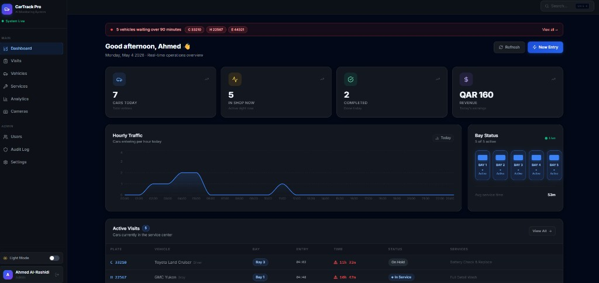
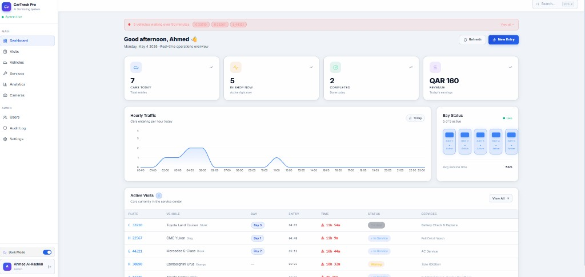
All 10 screenshots are taken from the live production system — every module is fully operational
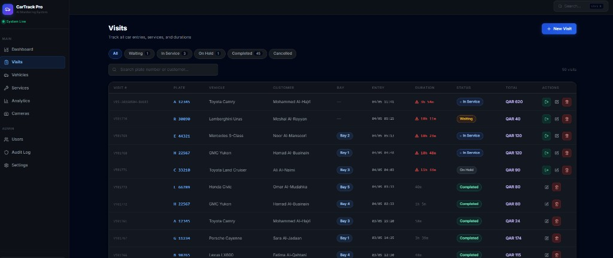
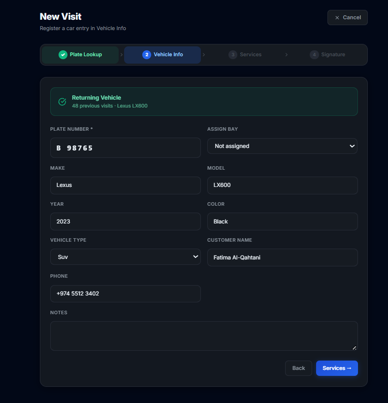
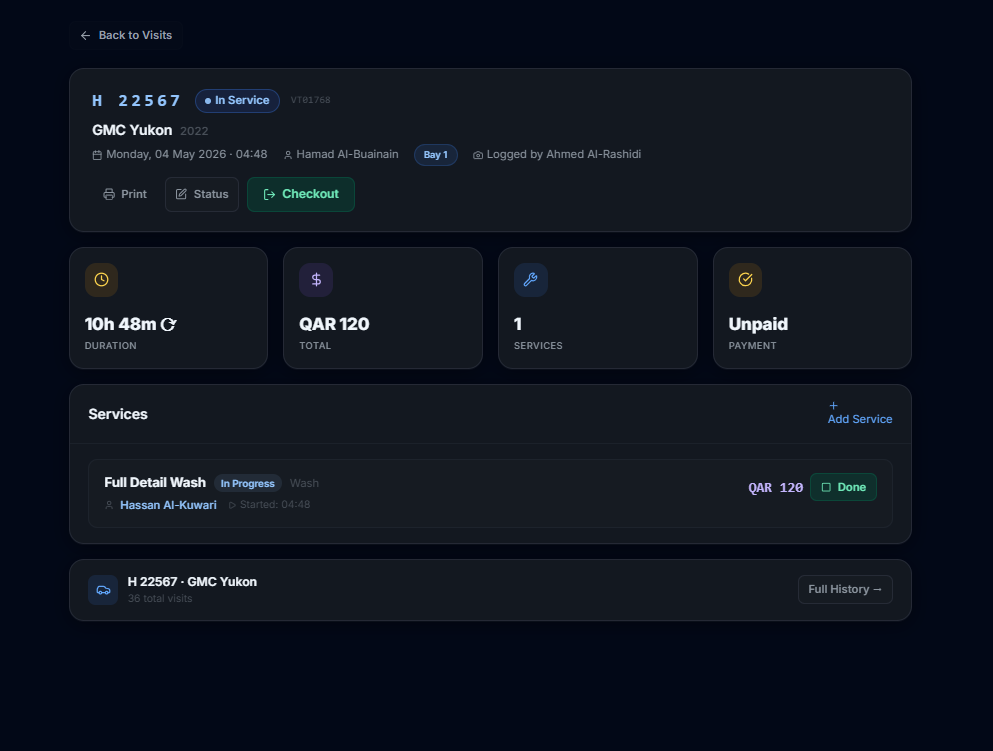
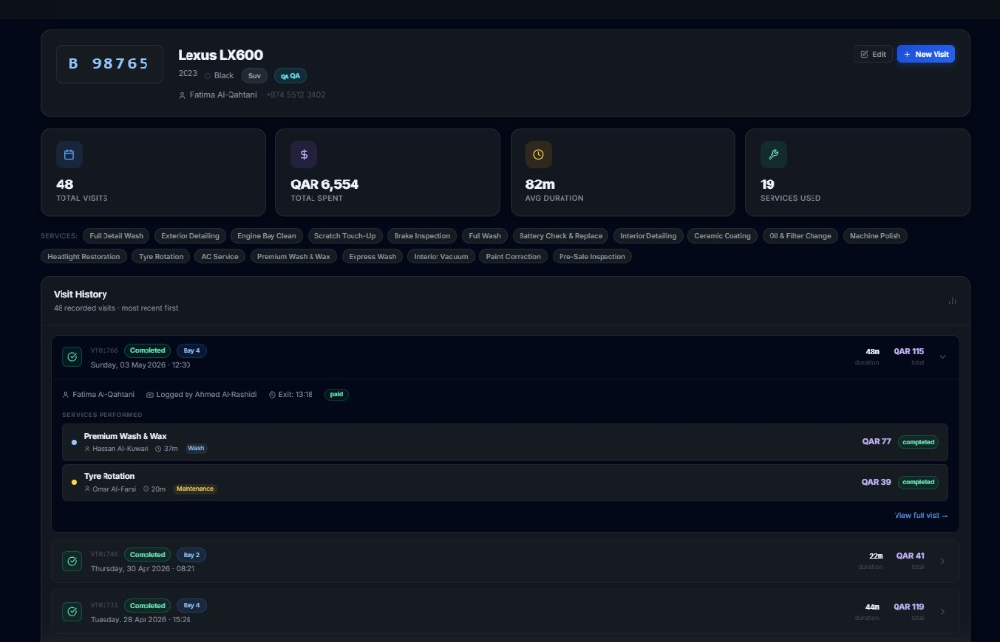
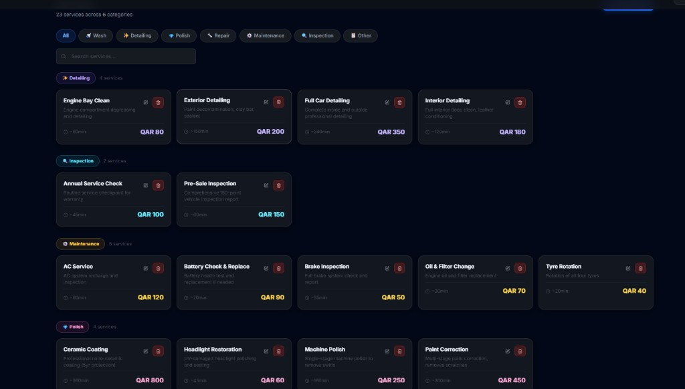
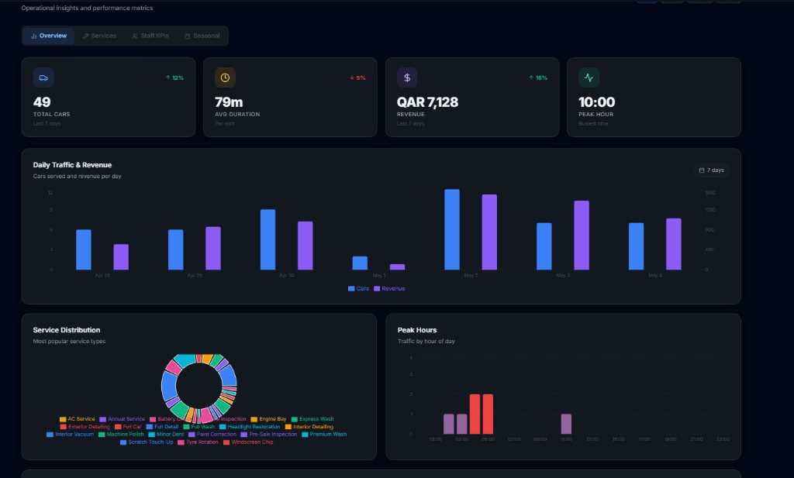
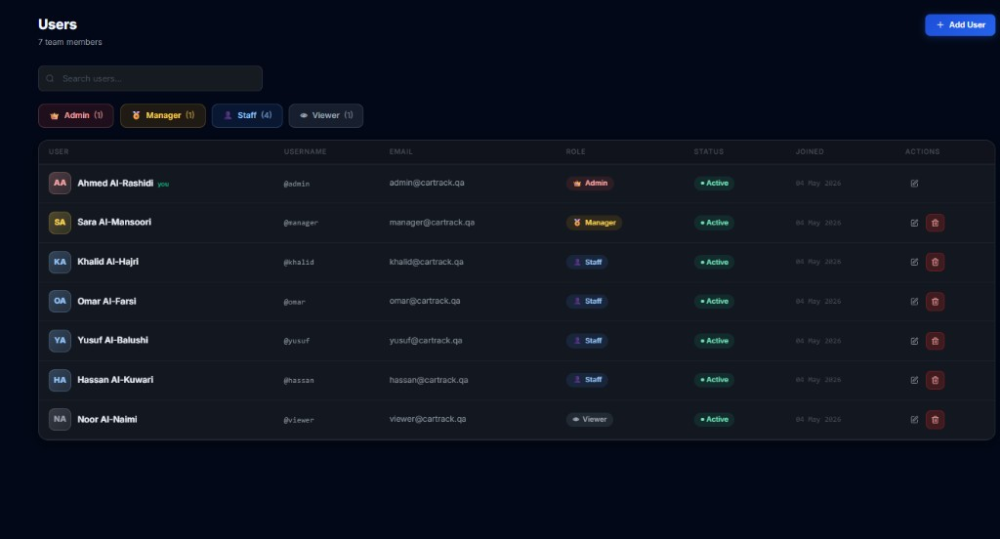
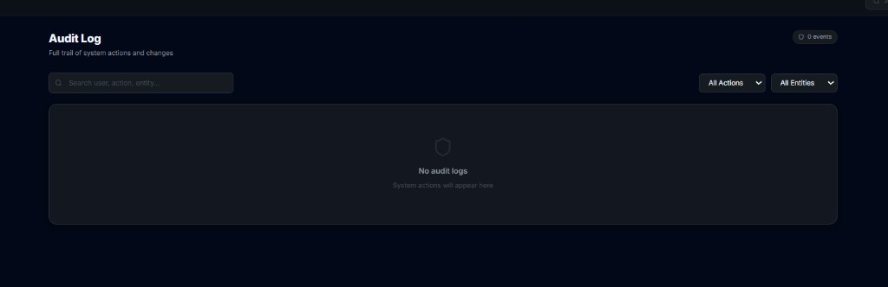
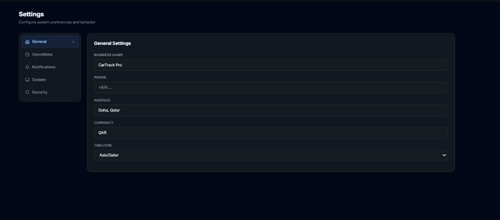
Hardware, software, and network specifications for a production-ready deployment
| Component | Minimum | Recommended |
|---|---|---|
| CPU | Intel Core i7-12700 / AMD Ryzen 7 5800X | REC Intel Core i9-13900K / AMD Ryzen 9 7950X |
| RAM | 32 GB DDR4 | REC 64 GB DDR5 |
| GPU (AI Inference) | NVIDIA RTX 3060 12GB VRAM | REC NVIDIA RTX 4080 / RTX 4090 |
| Primary Storage | 1 TB NVMe SSD | REC 2 TB NVMe SSD (OS + models + database) |
| Video Archive | 8 TB HDD RAID-1 (30-day retention) | REC 16 TB RAID-5 NAS (90-day retention) |
| Network Card | 1 Gbps Ethernet | REC 2.5 Gbps Ethernet |
| UPS | 1500VA APC or equivalent | REC 3000VA with AVR and auto-shutdown |
| Operating System | Windows Server 2022 | REC Ubuntu 22.04 LTS (preferred for AI stack) |
| Component | Specification | Purpose |
|---|---|---|
| PoE Switch | 24-port Managed PoE+ (802.3at), Gigabit | Power and connect all IP cameras via single cable run |
| Core Switch | Managed L2/L3 Gigabit with VLAN support | Isolate camera VLAN from office and client networks |
| NVR (backup) | 32-channel 4K NVR with RAID storage | Local video recording independent of AI server |
| Internet | 100 Mbps symmetric fibre (minimum) | Remote management, cloud backup, and software updates |
| Firewall / VPN | FortiGate 60F / pfSense with IPS | Secure remote access and network segmentation |
| Wi-Fi | Wi-Fi 6 AP — Ubiquiti / TP-Link Omada | Staff tablets, mobile access, customer-facing displays |
| Layer | Technology | Role |
|---|---|---|
| AI Engine | Python 3.11, YOLOv8, EasyOCR, OpenCV | Vehicle detection and plate reading from RTSP streams |
| Backend API | FastAPI (Python), SQLAlchemy ORM, Alembic | REST API serving all frontend requests and business logic |
| Database | PostgreSQL 15 (production deployment) | Persistent storage for visits, vehicles, users, analytics |
| Real-time Push | WebSocket — FastAPI native | Camera detection events and live updates pushed to frontend |
| Frontend | React 18, TypeScript, Vite, TanStack Query | Full web dashboard — all 11 modules, dark + light themes |
| Charts | Recharts | All analytics visualisations — bar, line, pie, donut, area |
| Authentication | JWT tokens + bcrypt, RBAC middleware | Secure login, persistent sessions, role-based access |
| Containerisation | Docker + Docker Compose | One-command deployment, environment consistency |
| Reverse Proxy | Nginx with HTTPS/TLS | SSL termination, static asset caching, load balancing |
| Device | Minimum Spec | Primary Use Case |
|---|---|---|
| Manager Workstation | Any modern PC, 8 GB RAM, Chrome / Firefox / Edge | Dashboard, analytics, user management, audit review |
| Reception Tablet | 10" iPad or Android tablet, Wi-Fi, Chrome | New visit wizard, customer digital signature capture |
| Staff Mobile | iOS 14+ / Android 11+, any modern browser | Start/Done service buttons, visit status updates |
| Bay Display | 24"+ HDMI monitor, connected to AI server or PC | Current vehicle, service status, duration for technicians |
A structured 6-week go-live plan followed by ongoing optimisation and support
Live figures from an existing client implementation — recorded over the first operational weeks of the system